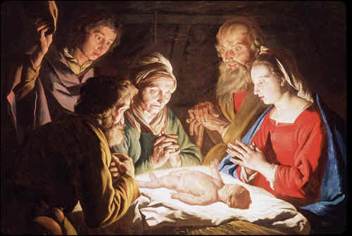

Historia de la Navidad
Origen de la celebración
La Navidad se celebra el 25 de diciembre y reúne costumbres religiosas, familiares y culturales que fueron evolucionando con el tiempo.

Evolución de las tradiciones
Con el paso de los años se incorporaron símbolos como el árbol, el pesebre, los villancicos, las cenas compartidas y el intercambio de regalos.
Dato: Cada país adaptó la Navidad a su propia cultura y temporada del año.